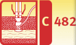
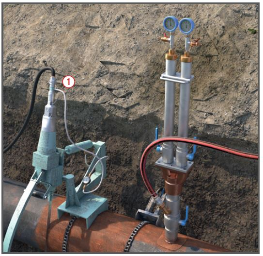
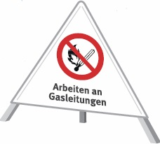
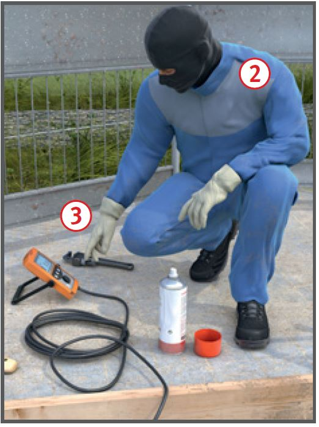

Arbeiten an Gasleitungen
|
 |

Gefährdungen
- Durch austretendes Gas kann es zu Bränden, Verpuffungen und Explosionen kommen, weiterhin besteht die Gefahr des Erstickens. Beim Aufbringen und Entfernen von Umhüllungen kann es durch das Freiwerden von Gefahrstoffen zu weiteren Gefährdungen kommen.
Allgemeines
- Arbeiten an Gasleitungen nach Möglichkeit im gasfreiem Zustand (im Arbeitsbereich Unterschreitung von 50 % der unteren Explosionsgrenze) ausführen. Arbeitsverfahren mit geringer Gefährdung anwenden.
- Arbeiten an Gasleitungen dürfen nur von Personen ausgeführt werden, die geeignet, zuverlässig und unterwiesen sind. Unterweisungen mind. jährlich durchführen. Teilnahme schriftlich dokumentieren.
- Arbeiten an Gasleitungen, bei denen mit Gesundheits-, Brand- oder Explosionsgefahr zu rechnen ist, dürfen nur unter Aufsicht einer geeigneten, zuverlässigen und in dieser Aufgabe unterwiesenen Person ausgeführt werden. Die Aufsicht inklusive der Weisungsbefugnis ist schriftlich zu übertragen.
- An Tiefpunkten von Gasleitungen können sich Kondensate sammeln (z. B. Odoriermittel). Diese mit geeigneten Behältern auffangen. Haut- und Augenkontakt durch die Verwendung von Augen- und Gesichtsschutz und Körperschutz vermeiden.
- Gruben und Gräben nicht mit Zelten o. Ä. überbauen. Zum Schutz gegen Witterungseinflüsse sind Schweißerschirme nur erlaubt, wenn Gasansammlungen unter Schirmen sicher ausgeschlossen werden können.
- Es ist sicherzustellen, dass in Bereichen, in denen sich zündfähige Gas-Luft-Gemische bilden können, keine Zündquellen vorhanden sind. Zündquellen können z. B. sein:
- Offene Flammen (z. B. Schweißbrenner, Flüssiggasbrenner),
- Glimmende Reste der Umhüllung,
- Elektrische Arbeitsmittel (z. B. Trennschleifer, elektrische Fuchsschwanzsäge, elektrische Bohrmaschine, Schweißelektrode, Kompressor, Ersatzstromaggregate),
- Funken durch elektrostatische Entladungsvorgänge,
- Elektrische Potentialunterschiede beim Trennen metallischer Leitungen,
- Funken durch vorbeifahrende Fahrzeuge, Schienenfahrzeuge und nicht explosionsgeschützte Baumaschinen.
- Zum Trennen von Gasleitungen keine Funken reißenden Geräte und Maschinen einsetzen. In Frage kommen z. B. Druckluftrohrsägen
 , Rohrschneider und funkenarmes Werkzeug.
, Rohrschneider und funkenarmes Werkzeug.
- Vor dem Trennen oder Verbinden von metallenen Leitungen Trennstelle mit einem flexiblen Kupferseil (Querschnitt des Kupferseils bis 10 m Länge ≥ 25 mm2, bis 20 m Länge ≥ 50 mm2) überbrücken.
- Blasensetzgeräte erden.

Schutzmaßnahmen
- Zu bearbeitendes Leitungsteil drucklos machen und sofern erforderlich mit Inertgas, z. B. Kohlendioxid oder Stickstoff spülen. Die dabei austretenden Gase gefahrlos ableiten.
- Die Gaskonzentration im Arbeitsbereich ist dauerhaft messtechnisch zu überwachen. Arbeitsplätze müssen schnell und gefahrlos verlassen werden können. Es sind mindestens zwei Fluchtwege, möglichst in unterschiedlichen Richtungen, einzurichten.
- Die Brandbekämpfung ist auf den Personenschutz auszurichten, dafür sind geeignete Brandbekämpfungsmittel z. B. zwei Feuerlöscher mit jeweils mindestens 15 Löschmitteleinheiten. Empfohlen 2 Pulverlöscher mit je 12 kg. bereitzustellen.
- Zum Anbohren von unter Druck befindlichen Gasleitungen z. B. ein Schleusenanbohrgerät verwenden.
- Für das provisorische, vorübergehende Sperren von Gasleitungen z. B. folgende Geräte, unter Beachtung der Herstellerinformation, einsetzen:
- Absperrarmaturen: Wird durch eine Armatur keine Dichtheit erzielt, weitere Maßnahmen vorsehen,
- Blasensetzgeräte (Einfach-, Doppel- oder Zweifachblasensetzgeräte); ab einem Betriebsdruck von 30 mbar oder Leitungsdurchmesser von 150 mm zwei Absperrblasen mit zwischenliegender Entlüftung einsetzen. Bei Flüssiggasversorgungsleitungen immer zwei Absperrblasen mit zwischenliegender Entlüftung verwenden. Absperrblasen nicht als alleinige Absperrung beim Schweißen verwenden,
- Stopplegerät,
- Abquetschvorrichtungen (PE-Leitungen): Wird durch eine einzelne Abquetschvorrichtung keine Dichtheit erzielt, weitere Maßnahmen vorsehen.
- Vor Wiederinbetriebnahme Gasleitungen mit Betriebsgas entlüften und so lange ausblasen, bis die vorhandene Luft in der Leitung verdrängt ist. Austretendes Gas-Luft-Gemisch gefahrlos ins Freie ableiten.
Zusätzliche Hinweise bei Arbeiten mit erhöhter Gefährdung
- Arbeitsverfahren mit erhöhter Gefährdung sind nur in begründeten Ausnahmefällen erlaubt. Dabei besteht im Arbeitsbereich Brand- und Explosionsgefahr wie z. B.:
- Anbohren unter kontrollierter Gasausströmung,
- Blasensetzen von Hand,
- Trennen von Leitungen unter kontrollierter Gasausströmung.
- Für Arbeiten unter kontrollierter Gasausströmung gilt:
- Anbohren: Bohrungsdurchmesser max. 65 mm,
- Trennen: max. Leitungsdurchmesser 65 mm. Leitung nach dem Trennen sofort provisorisch verschließen,
- Betriebsdruck (OP): max. 100 mbar,
- nur besonders unterwiesenes Personal einsetzen,
- erweiterte PSA verwenden.
- Arbeiten unter kontrollierter Gasausströmung ist an Flüssiggasleitungen nicht zulässig.
Persönliche Schutzausrüstung
- Flammenhemmende und antistatische Schutzkleidung benutzen
 . Darüber hinaus können in Frage kommen:
. Darüber hinaus können in Frage kommen:
- Schutzhelm,
- Schutzhandschuhe ,
- Sicherheitsschuhe S3 oder S5.
- Unter der Schutzkleidung keine leicht schmelzenden Textilien (Kunststoffhemden usw.) tragen.
- Bei Arbeiten mit erhöhter Gefährdung muss abhängig vom Einzelfall zusätzliche PSA z. B. Flammenhemmende Kopfhaube, Schutzbrille, von der Umgebungsluft unabhängiger Atemschutz,
benutzt werden.

Prüfungen
- Nach Abschluss der Arbeiten an Gasleitungen hat der Aufsichtsführende sich davon zu über zeugen, dass die Gasleitungen im Arbeitsbereich unter Betriebsbedingungen dicht sind.
- Art, Umfang und Fristen erforderlicher Prüfungen der Arbeitsmittel festlegen (Gefährdungsbeurteilung) und einhalten, z. B.:
- durch den Nutzer vor jedem Einsatz der Absperrblasen auf augenfällige Mängel und auf Dichtheit prüfen, festgestellte Mängel dem Aufsichtführenden mitteilen,
- durch eine "zur Prüfung befähigte Person" (z. B. Sachkundiger) vor der ersten Inbetriebnahme und nach Bedarf, mind.1 x jährlich (Herstellerangaben beachten).
- Ergebnisse dokumentieren.
Arbeitsmedizinische Vorsorge
- Arbeitsmedizinische Vorsorge nach Ergebnis der Gefährdungsbeurteilung veranlassen (Pflichtvorsorge) oder anbieten (Angebotsvorsorge).
Hierzu Beratung durch den Betriebsarzt.
07/2021